Tu vas tourner un socle mouluré, puis poser ton dé dessus — parfaitement centré, et sans le placer à l'œil. Deux pièces qui se tiennent, c'est un assemblage.
4eOnshape4e_C7.2 · 4e_C7.6Prolonge le TP « Le dé » de 5eNouveau geste : la révolution
🧭 Comment lire ce TP. En clair, ce que tu fais.
En italique coloré, ce que tu dois voir se
produire à l'écran — si tu ne le vois pas, ne continue pas : reprends l'étape.
Les encadrés orange préviennent des pièges. À la fin de chaque partie, une image te montre
ce que tu dois obtenir : compare, tu n'as besoin de personne pour te corriger.
Avant de commencer, deux choses.
🌐 Cette activité demande une connexion Internet, du début à la fin. Onshape fonctionne dans le navigateur et n'a aucun mode hors connexion : sans réseau, la séance ne peut pas avoir lieu, elle se reporte. La connexion se fait avec le compte de la classe, pas avec un compte à ton nom.
L'an dernier, en 5e, tu as construit un dé dans Onshape : tu as esquissé un carré, tu l'as coté, tu l'as extrudé en cube, puis tu as enlevé vingt et un creux et adouci les arêtes. Tu sais donc déjà ouvrir un plan, dessiner, coter, et faire de la matière.
Cette année, deux choses changent. D'abord un nouveau geste : au lieu de pousser une forme en ligne droite, tu vas la faire tourner autour d'un axe — c'est la révolution, et c'est comme ça qu'on obtient tout ce qui est rond. Ensuite, tu ne travailleras plus sur une seule pièce : tu vas en tenir deux ensemble, et dire au logiciel comment elles se touchent.
Tu n'as pas fait le TP du dé ? Ce n'est pas grave : tout ce qu'il faut savoir est rappelé au fur et à mesure, et un dé tout prêt t'attend au palier 5.
Aide détaillée
1 · Ranger avant de commencer
Comme l'an dernier : on range d'abord. Un travail qu'on ne retrouve pas à la séance suivante n'a pas eu lieu — et cette fois il y aura plusieurs onglets dans le même document, raison de plus pour le nommer clairement.
Dans Onshape, clique sur Créer en haut à gauche, puis sur Document…Une fenêtre Nouveau document s'ouvre, avec un champ Nom du document déjà sélectionné.
Écris Socle romain — TON NOM, puis valide avec Créer.Le document s'ouvre. En bas de l'écran, deux onglets : Part Studio 1, l'atelier où l'on dessine les pièces, et Assembly 1, où on les réunira.
À savoir avant de commencer : Ne mets pas d'accent ni de barre oblique dans le nom : certains exports les refusent.
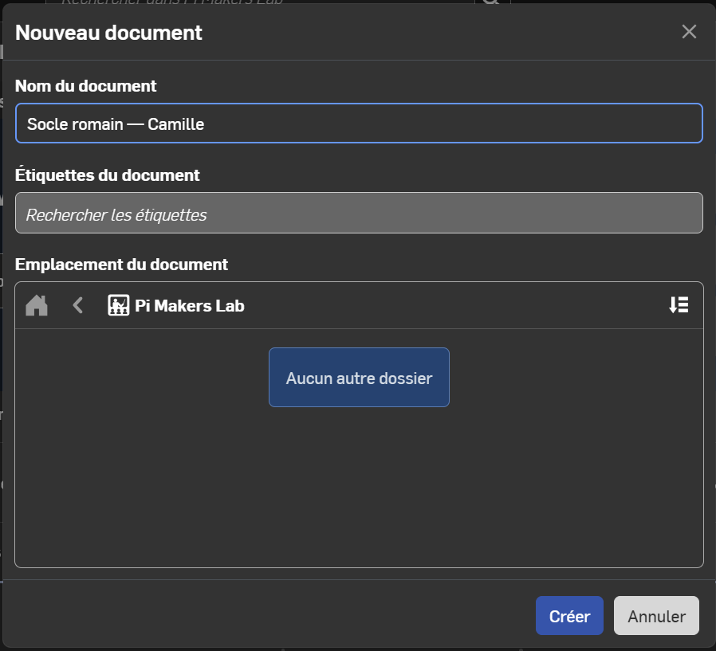
« Camille » est un exemple : écris ton propre nom.
⚠️ Cette valeur est un exemple : ne la recopie pas sans réfléchir, choisis la tienne.
Fais un clic droit sur l'onglet Part Studio 1, en bas, puis choisis Renommer. Écris Socle et valide avec Entrée.L'onglet porte maintenant le mot Socle. Tu sauras où tu es quand il y en aura trois.
À savoir avant de commencer : Un double-clic sur l'onglet ne renomme pas : il ouvre seulement un aperçu. Passe par le clic droit.
Ne cherche pas de bouton Enregistrer : il n'y en a pas.Rien ne dit « enregistré », et c'est normal : Onshape écrit chaque geste au moment où tu le fais.
À savoir avant de commencer : Si tu fais Ctrl+S par réflexe, c'est le navigateur qui répond et te propose d'enregistrer la page en HTML : ce fichier ne contient pas ta pièce. Annule cette fenêtre.
Vérifie-le tout de suite : clique sur le logo Onshape, en haut à gauche, puis rouvre ton document.La page Documents s'affiche, ton fichier y figure dans la bande Ouvert en dernier par moi et dans la liste du dessous. Tu le rouvres, tout est là.
À savoir avant de commencer : Tu as peut-être déjà fait cette vérification l'an dernier. Refais-la : c'est court, et ça vaut mieux que de se demander en fin de séance si le travail a tenu.
Ce que tu dois obtenir :
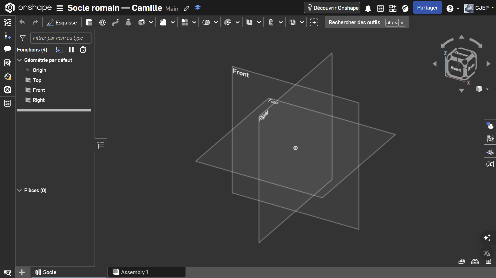
🎯 Tu peux passer à la suite quand : Ton document est créé, nommé, et son premier onglet s'appelle Socle.
💾 Point de reprise. Tu n'as rien à enregistrer : c'est déjà fait, tout seul, depuis le début. Si le poste redémarrait maintenant, tu retrouverais ton travail exactement ici.
Aide détaillée
2 · Le profil du socle — une moitié suffit
Voici l'idée du tour : on ne dessine pas le socle. On dessine seulement sa coupe, d'un seul côté de l'axe — et on demande au logiciel de la faire tourner. C'est exactement le geste du potier.
Clique sur Esquisse dans la barre du haut.Un panneau Esquisse 1 s'ouvre ; son champ Plan d'esquisse est vide, et un message te demande de sélectionner un plan.
Dans l'arbre à gauche, clique sur le plan Front, puis appuie sur la touche n pour le voir de face.Le plan Front se met à plat face à toi, et la barre du haut affiche les outils de dessin — ligne, rectangle, cercle.
À savoir avant de commencer : Les trois plans gardent leur nom anglais même quand Onshape est en français : Front est le plan de face, Top celui du dessus, Right celui de droite.
Avec l'outil Ligne, trace une ligne verticale qui part de l'origine et monte. Elle sera l'axe du tour.La ligne apparaît, accrochée à l'origine, avec un petit symbole de contrainte verticale à côté.
À savoir avant de commencer : Vise l'origine : le petit point au centre. Quand ton curseur est dessus, il devient orange et la ligne s'y accroche toute seule.
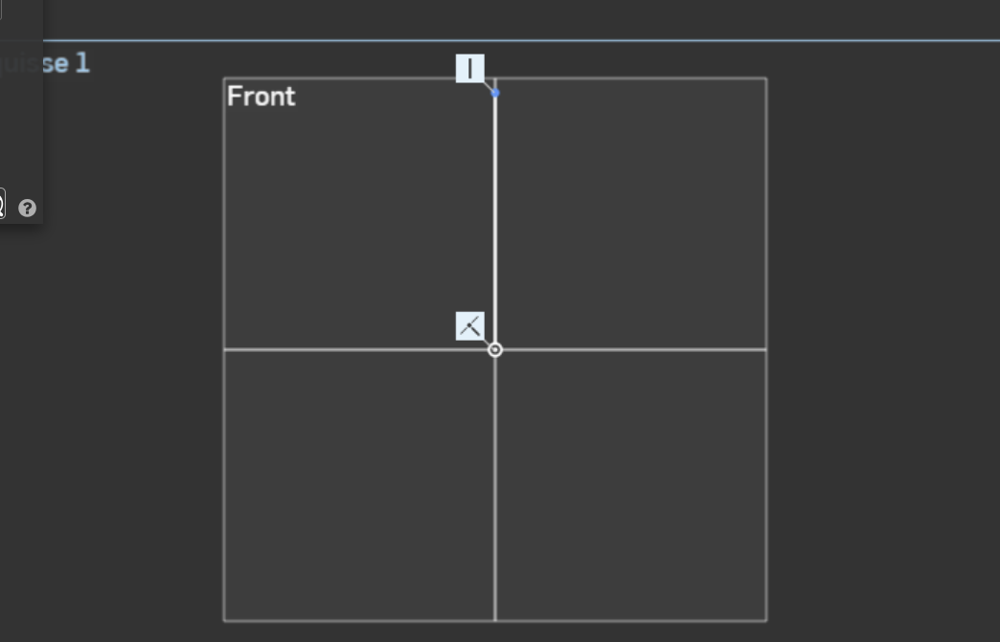
Sélectionne cette ligne, puis clique sur l'outil Construction (raccourci q).Le trait devient un trait mixte, fait de tirets et de points : il ne fera pas de matière, il sert seulement à guider.
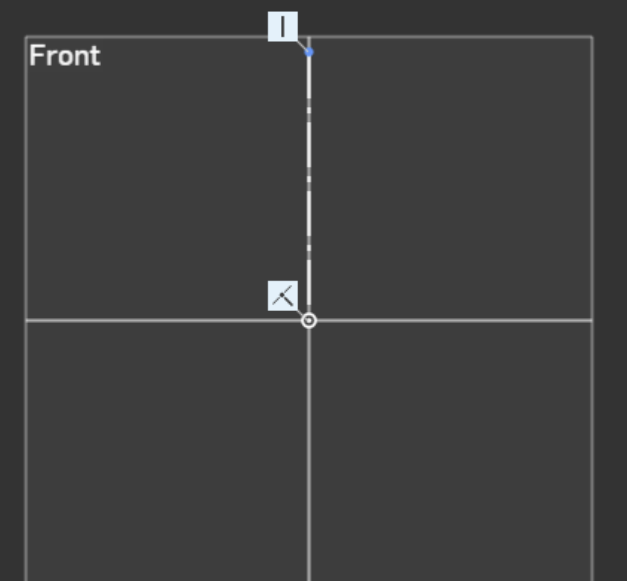
Ouvre la petite flèche à côté de l'outil rectangle et choisis Rectangle par sommet. Clique sur l'origine, puis clique en haut à droite de l'axe.
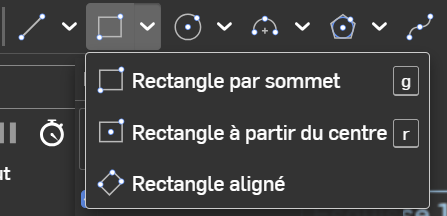
Un rectangle apparaît, un coin sur l'origine et le côté gauche posé contre l'axe. L'intérieur se teinte : la forme est fermée.
À savoir avant de commencer : Dessine à peu près, sans chercher la précision : on cote juste après. Un rectangle vaut mieux que quatre lignes tracées à la main — avec quatre lignes, un coin peut rester libre et le profil ne se fermer jamais tout à fait.
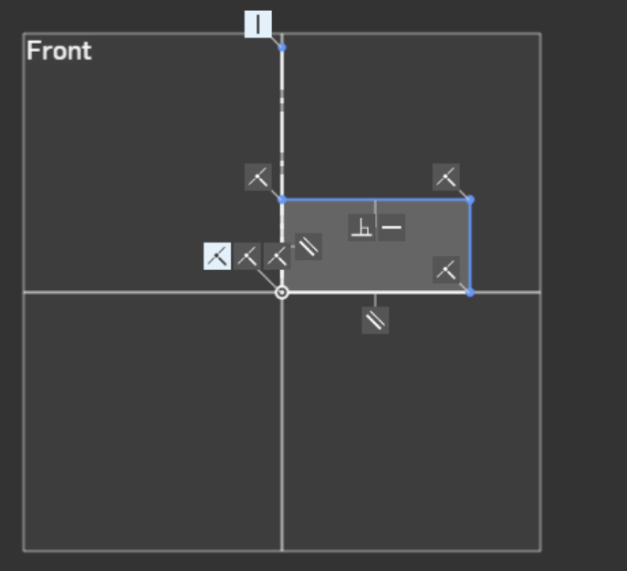
Avec l'outil Cote (raccourci d), clique sur le côté droit du rectangle, puis clique un peu à sa droite pour poser la cote. Tape 35 et valide avec Entrée.La cote s'affiche, et le dessin se redresse d'un coup pour lui obéir : la hauteur vaut maintenant 35 mm.
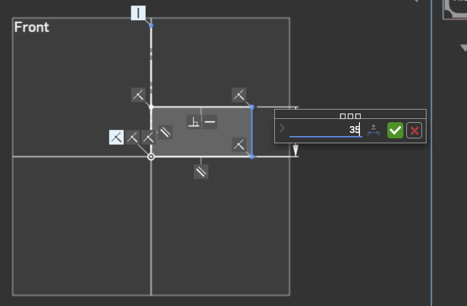
Cote de la même façon le côté du bas : 70.Le profil devient entièrement blanc. Sur le fond sombre d'Onshape, le blanc veut dire : plus rien ne peut bouger, tout est décidé.
À savoir avant de commencer : Tant qu'il reste du bleu, c'est qu'une dimension est encore libre. Ce n'est pas une faute, mais le socle changerait de taille si on le tirait.
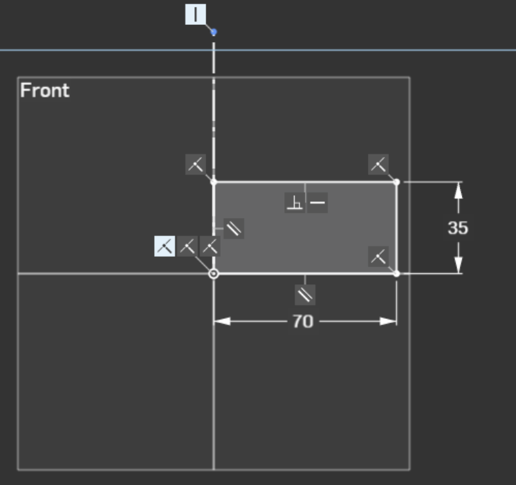
Ce que tu dois obtenir :
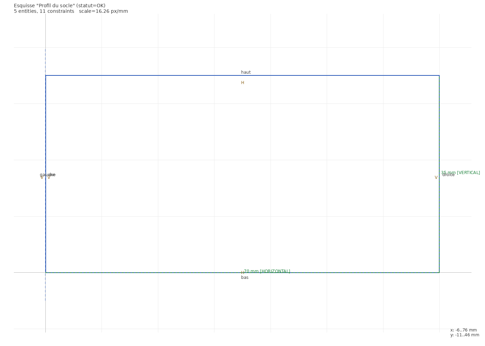
🎯 Tu peux passer à la suite quand : Ton profil est fermé, entièrement noir, et coté 70 par 35.
💾 Point de reprise. Tu n'as rien à enregistrer : c'est déjà fait, tout seul, depuis le début. Si le poste redémarrait maintenant, tu retrouverais ton travail exactement ici.
Aide détaillée
3 · La révolution — faire tourner le profil
Le geste nouveau de l'année. En 5e, tu poussais une forme en ligne droite : c'était l'extrusion. Ici tu vas la faire tourner autour de l'axe. Même logique, autre mouvement.
Valide ton esquisse avec la coche verte, puis clique sur Pivoter dans la barre du haut (raccourci Maj+W).Un panneau Pivoter 1 s'ouvre à gauche, avec deux champs : Faces et zones d'esquisse à pivoter, et Axe de révolution.
À savoir avant de commencer : Dans l'Onshape français, l'outil qui fait tourner un profil s'appelle Pivoter. Le mot du métier, lui, reste la révolution : c'est d'ailleurs celui qu'affiche le champ Axe de révolution.
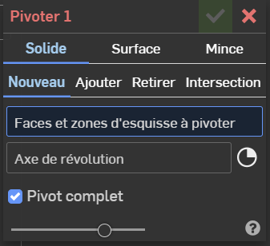
Clique dans la zone de dessin sur l'intérieur de ton profil pour remplir le premier champ.Le profil se surligne, et Face de Esquisse 1 apparaît dans le premier champ.
Clique ensuite dans le champ Axe de révolution, puis sur ta ligne de construction.Un aperçu du socle rond apparaît aussitôt, et l'axe se dessine en pointillés orange en son centre. C'est la matière qui tourne.
À savoir avant de commencer : Si rien n'apparaît, c'est que le profil touche l'axe ou le croise. Un profil de révolution doit être posé contre l'axe, jamais à cheval dessus.
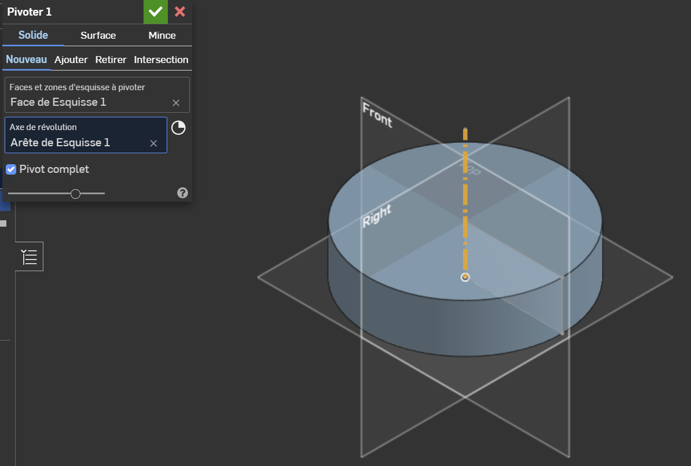
Vérifie que la case Pivot complet est cochée, puis valide avec la coche verte.Le socle plein apparaît, avec une nouvelle ligne Pivoter 1 dans l'arbre à gauche.
Clique sur l'outil Propriétés de masse, en bas à droite, puis sur ta pièce dans l'arbre.Un panneau s'ouvre et affiche le Volume de ta pièce. Referme-le avec la croix.
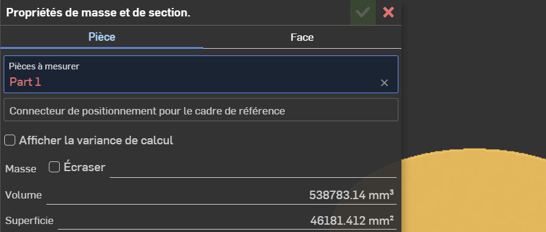
Ce que tu dois obtenir :
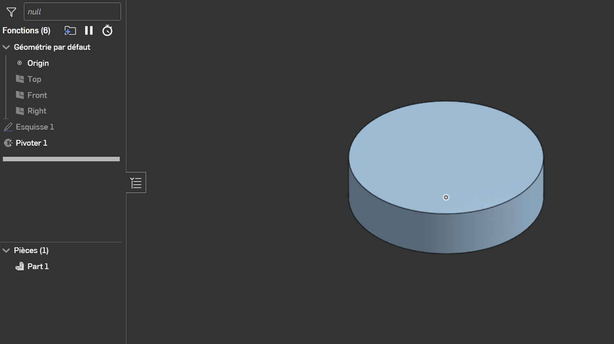
🎯 Tu peux passer à la suite quand : Un socle cylindrique existe, et l'arbre affiche Révolution 1.
💾 Point de reprise. Tu n'as rien à enregistrer : c'est déjà fait, tout seul, depuis le début. Si le poste redémarrait maintenant, tu retrouverais ton travail exactement ici.
Aide allégée
4 · La moulure — ce qui fait « romain »
Un socle romain n'a pas d'arêtes vives : il a des moulures, ces bourrelets et ces creux qui font l'ombre. Tu les obtiens avec le geste que tu connais déjà de l'an dernier — le congé.
Clique sur Congé dans la barre du haut, puis sur l'arête du haut du socle.Un panneau Congé 1 s'ouvre ; l'arête se surligne tout autour, et Arête de Pivoter 1 apparaît dans le champ Entités à arrondir.
Règle le Rayon à 6 et valide.Le bord supérieur du socle s'arrondit franchement : la lumière glisse dessus au lieu de s'arrêter net.
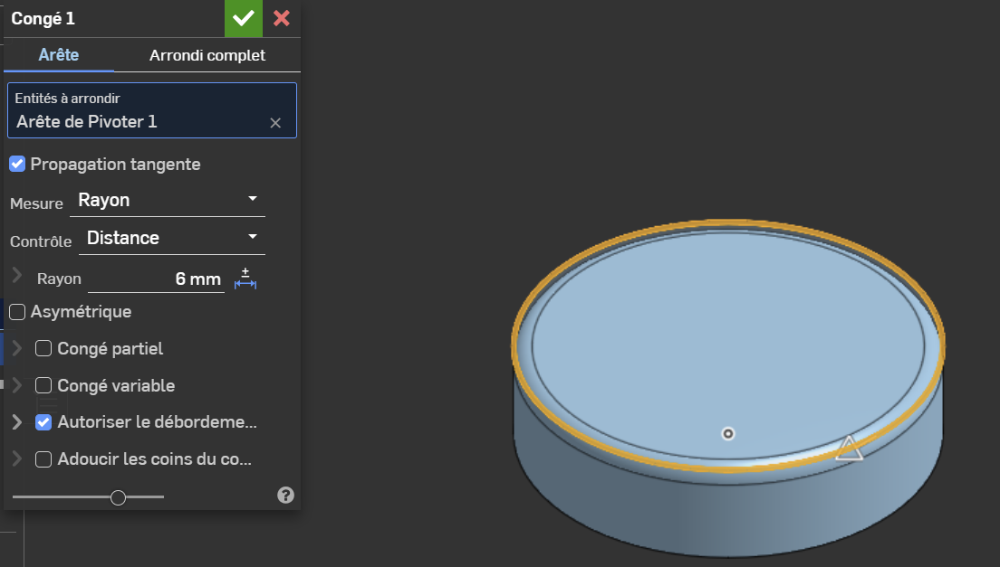
Recommence sur l'arête du bas, avec un rayon plus petit : 3.Le pied du socle s'adoucit à son tour, mais moins que le haut. L'arbre compte maintenant Congé 1 et Congé 2.
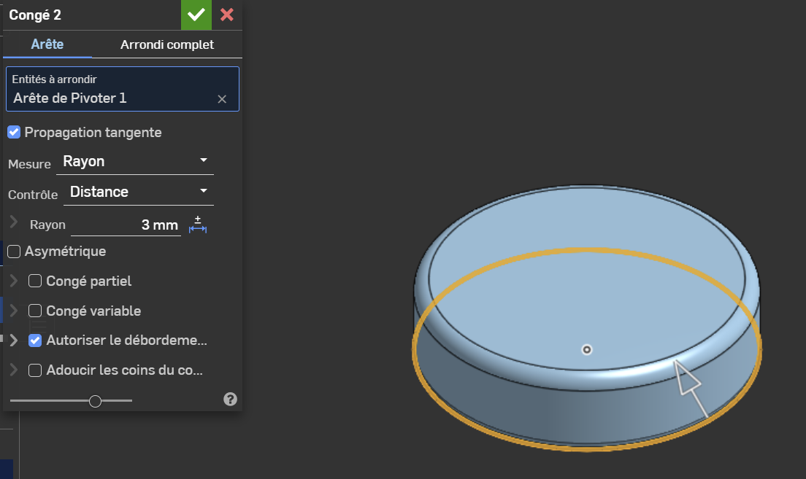
Deux mots à ne plus confondre, et tu vas les voir côte à côte dans le même menu.Ouvre la petite flèche à côté de l'outil Congé : Onshape y propose aussi Chanfrein.
À savoir avant de commencer : Le congé arrondit : l'arête devient un quart de cylindre, la lumière glisse dessus sans rupture. Le chanfrein coupe droit, en général à 45° : l'arête devient une petite facette plate. Même geste, même menu, deux objets très différents — l'un a l'air poli, l'autre a l'air taillé. Essaie les deux sur ton socle avant de choisir : la différence saute aux yeux, et elle ne se raconte pas.
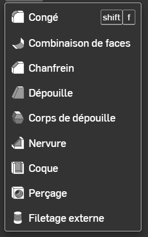
Compare tes deux rayons : 6 en haut, 3 en bas. Demande-toi pourquoi ils ne sont pas égaux.Le haut est nettement arrondi, le bas beaucoup plus discret.
⚠️ Le grand congé du haut est là pour l'œil : c'est lui qui donne l'allure de moulure et qui accueille le dé. Le petit du bas est là pour l'usage : une arête vive au ras d'un bureau s'ébrèche et raye. Un rayon n'est presque jamais un choix décoratif seul : il répond à ce que l'objet va subir.
Ce que tu dois obtenir :
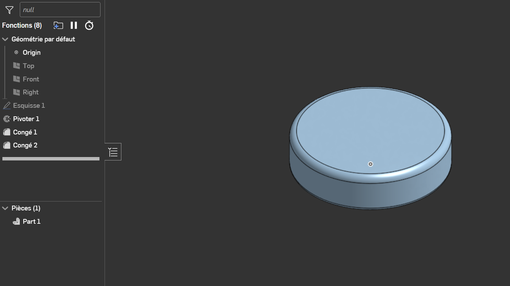
🎯 Tu peux passer à la suite quand : Les deux arêtes circulaires du socle sont arrondies, celle du haut davantage.
💾 Point de reprise. Tu n'as rien à enregistrer : c'est déjà fait, tout seul, depuis le début. Si le poste redémarrait maintenant, tu retrouverais ton travail exactement ici.
Aide détaillée
5 · Le dé — celui de l'an dernier
Il te faut maintenant une deuxième pièce. Si tu as encore ton dé de 5e, reprends-le. Sinon, un dé tout prêt t'attend — et on ne perdra pas une séance à le refaire.
En bas de l'écran, clique sur le +, puis sur Importer…, et choisis le fichier 📥 de_50.step fourni avec le TP.Une fenêtre Importer dans Onshape s'ouvre, avec le choix Importer dans ce document déjà retenu.
Laisse les réglages tels quels et clique sur Importer.Un message vert confirme l'import. En bas, un nouvel onglet de_50 apparaît, et un dossier Imports CAO qui garde le fichier d'origine.
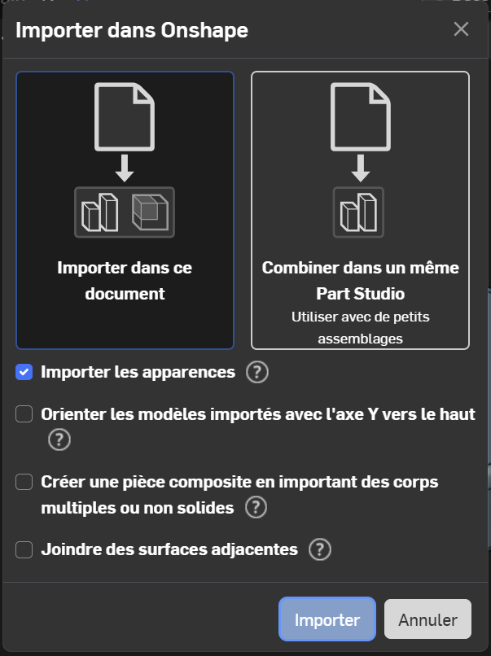
Renomme l'onglet de_50 en De (clic droit, Renommer), puis ouvre-le.Le dé apparaît. Dans l'arbre, une seule fonction, Import 1 : c'est une pièce importée, on ne peut plus la remonter étape par étape.
À savoir avant de commencer : Tu as ton dé de 5e ? Ton professeur peut te montrer comment le faire venir dans ce document à la place du dé fourni. Le TP marche de la même façon avec l'un ou l'autre.
Dans chaque onglet, nomme ta pièce : clic droit sur Part 1, dans la liste Pièces en bas de l'arbre, puis Renommer. Écris Socle dans l'onglet Socle, De dans l'onglet De.Chaque pièce porte son nom. Dans l'assemblage, tu ne verras plus deux « Part 1 » impossibles à distinguer.
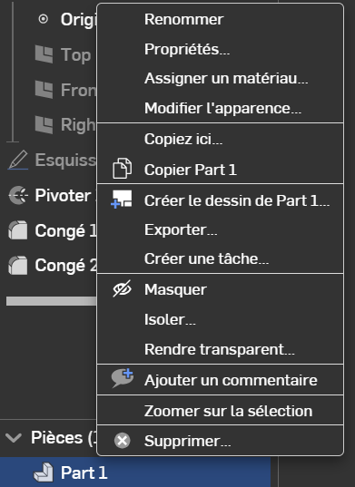
Ce que tu dois obtenir :
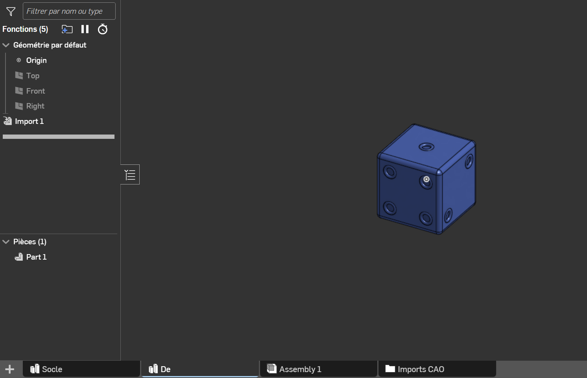
🎯 Tu peux passer à la suite quand : Ton document contient deux onglets, l'un avec le socle, l'autre avec le dé.
💾 Point de reprise. Tu n'as rien à enregistrer : c'est déjà fait, tout seul, depuis le début. Si le poste redémarrait maintenant, tu retrouverais ton travail exactement ici.
Aide détaillée
6 · L'assemblage — mettre les deux pièces ensemble
Un assemblage n'est pas un dessin de plus : c'est un endroit où les pièces existantes viennent se rencontrer. On n'y dessine rien, on y place et on y contraint.
Renomme l'onglet Assembly 1 en Presse-papier, puis ouvre-le.La barre du haut a changé : plus d'outils de dessin, mais Insérer et des icônes de liaison. L'arbre annonce Instances (0).
À savoir avant de commencer : Si tu vois encore Esquisse et Extrudeur, c'est que tu es resté dans un Partie Studio. Regarde quel onglet est actif en bas.
Clique sur Insérer. Dans le panneau, clique sur Socle, puis une fois dans la zone de dessin.Le socle apparaît. Le compteur du panneau passe à Inséré : 1.
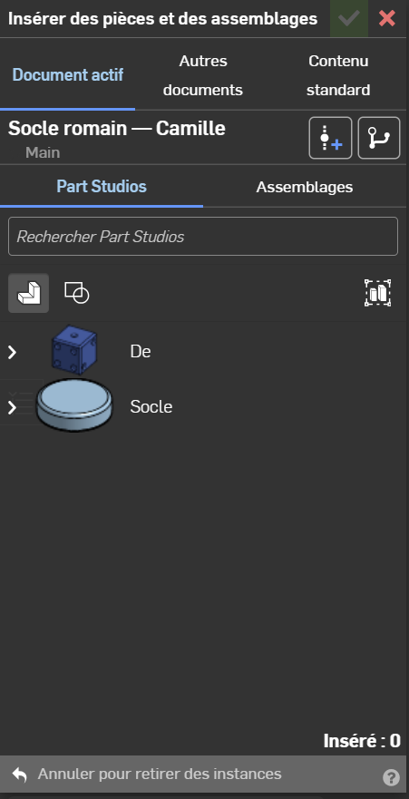
Clique maintenant sur De, puis à côté du socle, pas dessus. Ferme le panneau avec la coche verte.Deux pièces dans l'arbre. Le dé est posé n'importe où : si tu le tires à la souris, il se déplace librement.
À savoir avant de commencer : Place-le volontairement à côté. On voit mieux ce que fait une contrainte quand elle a du travail à faire.
Fais un clic droit sur le Socle dans l'arbre, puis choisis Fixer.L'icône à côté du socle change : il est fixé, il ne bougera plus. Le dé, lui, reste libre.
À savoir avant de commencer : Onshape ne fixe pas la première pièce tout seul : c'est à toi de le faire. Sans ce geste, tirer sur le dé pourrait entraîner le socle.
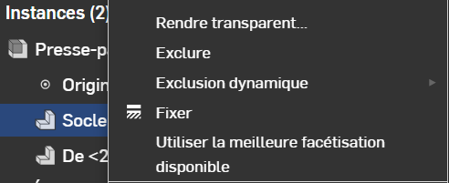
Ce que tu dois obtenir :
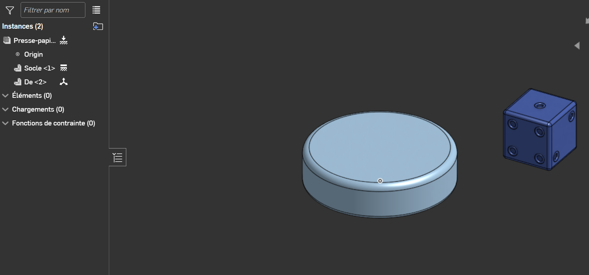
🎯 Tu peux passer à la suite quand : Les deux pièces sont dans l'assemblage, le socle fixé, le dé libre.
💾 Point de reprise. Tu n'as rien à enregistrer : c'est déjà fait, tout seul, depuis le début. Si le poste redémarrait maintenant, tu retrouverais ton travail exactement ici.
À toi de jouer
7 · Les contraintes — centrer sans viser
Voilà le cœur de la séance. Placer le dé à l'œil, c'est facile — et c'est faux : au premier zoom on voit qu'il est de travers. Une contrainte ne place pas la pièce, elle interdit un mouvement. C'est le logiciel qui en déduit la position, et elle est exacte.
Clique sur Liaison fixe dans la barre du haut (raccourci m).
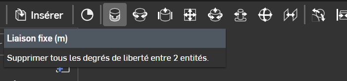
Un panneau Fixe 1 s'ouvre, avec un champ Connecteurs de positionnement à remplir deux fois.
Survole la face du dessous du dé, et clique sur le point proposé en son centre.Des points blancs apparaissent sur la face : un au centre, d'autres aux coins et aux milieux des arêtes. Une fois cliqué, le premier connecteur s'inscrit dans le champ.
À savoir avant de commencer : Onshape utilise les connecteurs de position : quand tu survoles une face, il propose un point au centre et un aux coins. Vise le point central, celui qui apparaît au milieu de la face. Et si le dé se retourne ou s'enfonce dans le socle : c'est normal, ça arrive à tout le monde. Le logiciel a aligné les deux repères dans le même sens au lieu de les mettre face à face. Cherche le bouton d'inversion dans le panneau de la liaison — une petite double flèche — et clique-le. Le dé se remet à l'endroit.
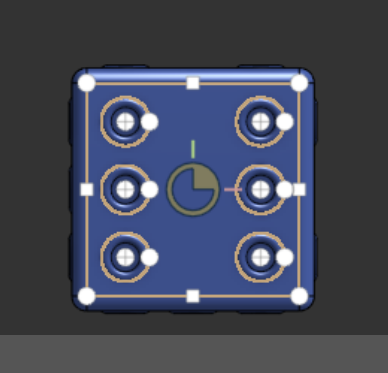
Pour voir la face du dessous, choisis la vue Dessous dans le cube de navigation, en haut à droite.
Survole la face du dessus du socle, et clique à nouveau sur le point proposé en son centre.Le dé saute et vient se poser au centre du socle, à plat. Une petite fenêtre flottante apparaît près de lui.
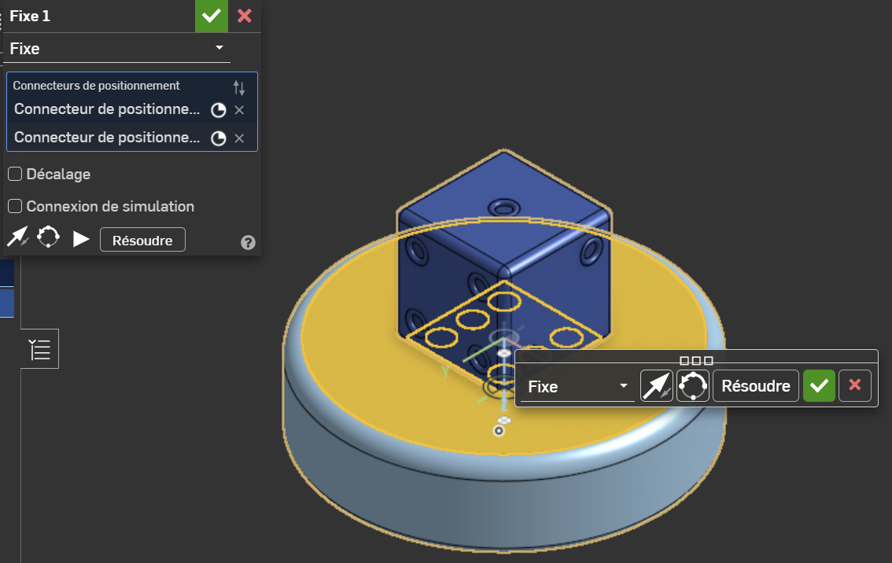
Si le dé s'est retourné, clique sur Inverser l'axe principal dans la fenêtre flottante. Valide ensuite avec sa coche verte.Le dé se pose à l'endroit, et la liaison Fixe 1 s'inscrit dans l'arbre sous Fonctions de contrainte.
À savoir avant de commencer : Aussitôt la liaison validée, Onshape en ouvre une nouvelle, Fixe 2, prête à servir. Tu n'en as pas besoin : ferme-la avec la croix rouge.
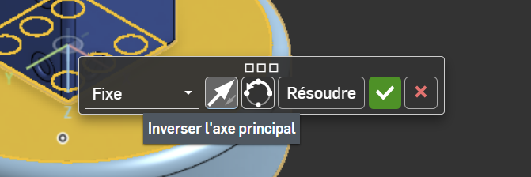
Tourne la vue et regarde le dé par-dessous, puis de côté.Le dé est centré sur l'axe du socle, et sa base touche exactement le dessus du socle : aucun jour, aucun chevauchement.
⚠️ Si ton dé est décalé, c'est que tu as visé un connecteur de coin. Double-clique sur la liaison dans l'arbre pour la refaire.
Ce que tu dois obtenir :
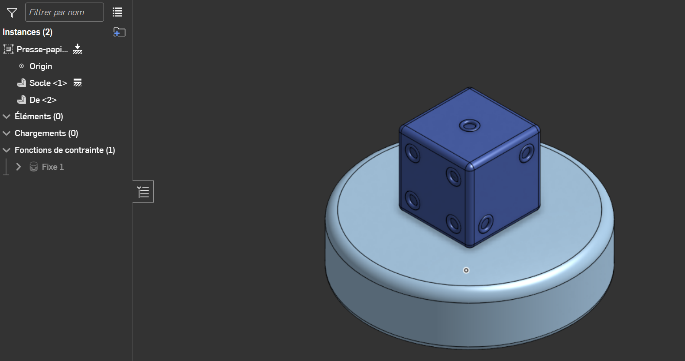
🎯 Tu peux passer à la suite quand : Le dé est centré sur le socle, et il ne bouge plus quand on tire dessus.
💾 Point de reprise. Tu n'as rien à enregistrer : c'est déjà fait, tout seul, depuis le début. Si le poste redémarrait maintenant, tu retrouverais ton travail exactement ici.
Aide détaillée
8 · Emporter son travail : nommer, exporter, retrouver
Un travail qu'on ne retrouve pas n'a pas eu lieu. Ce dernier palier ne fabrique rien : il met ta pièce à l'abri et te donne le fichier que la machine attend.
Ne cherche pas de bouton Enregistrer : il n'y en a pas.Rien à l'écran ne dit « enregistré ». C'est normal : Onshape sauvegarde en continu, à chaque geste, dans ton compte.
À savoir avant de commencer : Si tu fais Ctrl+S par réflexe, c'est le navigateur qui répond, pas Onshape : il te propose d'enregistrer la page en HTML ou MHTML. Ce fichier ne contient pas ta pièce — seulement l'habillage de l'écran. Annule cette fenêtre. La seule chose qu'il faut penser à faire, c'est nommer le document, et ça se fait une fois pour toutes.
Vérifie le nom du document, en haut à gauche. S'il s'appelle encore « Sans titre », renomme-le maintenant : Dé sur socle - TES INITIALES.Le nom change dans le bandeau du haut.
À savoir avant de commencer : Dans une classe de vingt-huit, vingt-huit fichiers « Partie Studio 1 » ne se distinguent pas. Le nom du travail plus tes initiales, c'est ce qui te permettra de retrouver le tien.
Fais un clic droit sur l'onglet Presse-papier, en bas, puis choisis Exporter…Une fenêtre Exporter s'ouvre, avec un Nom du fichier, un Format et des options.
À savoir avant de commencer : Le format déjà choisi n'est pas toujours le même : Onshape reprend souvent celui de la dernière fois. Regarde-le à chaque export, ne le suppose jamais.
Choisis le format STEP.La liste propose une douzaine de formats. Deux comptent pour toi : STEP, que tout logiciel de CAO sait relire, et STL, que lit l'imprimante 3D.
Quand tu choisis STL, trois réglages apparaissent. Le plus important est Unités : laisse ou choisis Millimeter.Trois listes s'ajoutent : Format STL, Unités, Résolution. Les noms d'unités restent en anglais.
À savoir avant de commencer : Un fichier STL ne contient que des nombres, sans unité écrite dedans : le logiciel de l'imprimante suppose des millimètres. Si tu laisses Mètre, un objet de 50 mm sera décrit par le nombre 0,05 — et la machine fabriquera un grain de cinquante microns, invisible. La description est juste, l'unité manque, la machine se trompe d'un facteur mille. C'est très exactement la question du TP : décrire assez précisément pour qu'une machine fabrique sans nous.
Laisse Format STL : Binaire et choisis Résolution : Fin.Les deux listes se ferment sur ces valeurs.
⚠️ Binaire ou texte, c'est la même géométrie écrite de deux façons : le texte se lit dans un éditeur — on y voit chaque triangle avec ses trois sommets — mais pèse cinq à six fois plus lourd. Ouvrir une fois un STL texte dans le Bloc-notes est une belle façon de voir qu'un objet 3D n'est qu'une liste de triangles. La résolution est la finesse de ce maillage : en Grossier, les facettes se voient sur les congés et les creux ronds ; en Fin, elles disparaissent, au prix d'un fichier plus gros.
Dans Options, choisis « Télécharger et stocker le fichier dans un nouvel onglet », puis valide.Le fichier descend dans tes téléchargements, et un onglet supplémentaire apparaît en bas de ton document Onshape.
À savoir avant de commencer : C'est le seul des trois choix qui protège ton travail. Sur un poste de collège, le dossier Téléchargements est souvent vidé, et tu ne repasseras pas forcément sur la même machine : un simple « Télécharger » revient à ne rien garder. Là, le fichier reste attaché au document et te suit.
Pour une simple image — un compte rendu, le cahier de texte — n'exporte rien.Une icône d'appareil photo, dans la barre verticale à droite de la vue 3D, produit un PNG propre du modèle.
À savoir avant de commencer : Un export n'est pas un enregistrement : c'est une traduction de la pièce vers ce qu'une machine ou un autre logiciel sait lire — et chaque traduction perd quelque chose. L'original, celui qui garde l'histoire complète et les cotes modifiables, reste dans Onshape.
Ce que tu dois obtenir :
🎯 Tu peux passer à la suite quand : ton document porte ton nom, et le fichier exporté apparaît dans un onglet en bas de ton document.
À toi de jouer
9 · 🎁 Ton presse-papier, et pas celui du voisin
Le travail est fini. Ce qui suit ne sert à rien — c'est exactement pour ça qu'on le fait. Et comme l'an dernier sur ton dé : la couleur dit ce que l'objet a l'air d'être, le matériau dit ce dont il est fait. Sur un assemblage, la différence saute aux yeux.
Dans l'onglet Socle, fais un clic droit sur la pièce Socle, puis Modifier l'apparence… Choisis dans la palette une teinte de pierre — un gris chaud, un beige.Le socle change de couleur dans l'aperçu. Valide avec la coche verte.
Fais de même pour le dé, dans l'onglet De : une couleur franchement différente, un brun bronze par exemple.Les deux pièces se lisent d'un coup d'œil, et le dé cesse de se confondre avec son support.
Mets d'abord la masse en grammes : menu ≡ en haut à gauche, Unités de l'espace de travail… Choisis Gram pour la masse et Gram per cubic centimeter pour la densité, puis valide.Les réglages se referment. Par défaut, Onshape comptait en livres (Pound) : un chiffre juste, mais dans une unité que personne n'utilise en France.
Clic droit sur la pièce Socle, Assigner un matériau… Choisis la bibliothèque Onshape Material Library, tape Bronze et prends Bronze (8-14% Sn). Donne de même au dé le matériau ABS.Les couleurs ne changent pas : le matériau décide de la masse, pas de l'apparence. Chaque matériau affiche sa densité.
À savoir avant de commencer : La bibliothèque proposée d'abord n'est pas celle d'Onshape : ouvre la liste du haut et choisis Onshape Material Library, sinon tu ne trouveras pas le bronze.
Ouvre les Propriétés de masse de chaque pièce, et additionne les deux masses : c'est la masse de ton presse-papier.Le socle en bronze pèse plusieurs kilos ; le dé en ABS, à peine plus de cent grammes.
À savoir avant de commencer : Un presse-papier doit être lourd, sinon il ne presse rien. Regarde ta masse totale et demande-toi si l'objet ferait le travail. C'est la première fois qu'un chiffre du logiciel te dit si ton objet est réussi.
Tes nombres dépendent de ton propre socle et du bronze choisi : ceux-ci sont un exemple.
⚠️ Cette valeur est un exemple : ne la recopie pas sans réfléchir, choisis la tienne.
Oriente la vue comme tu la trouves belle et fais une capture d'écran.Ton presse-papier, en perspective, deux matières et une lumière qui glisse sur les moulures.
⚠️ Garde cette image : c'est elle que tu montreras, pas le fichier.
Ce que tu dois obtenir :
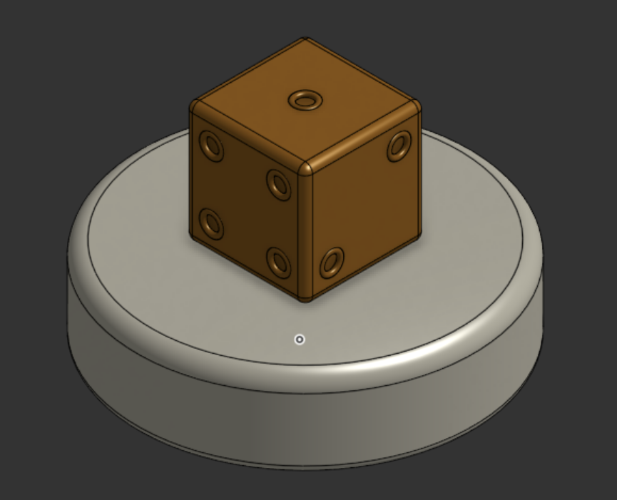
🎯 Tu peux passer à la suite quand : Tes deux pièces ont des apparences distinctes, un matériau chacune, et tu sais dire la masse de ton presse-papier.
💾 Point de reprise. Tu n'as rien à enregistrer : c'est déjà fait, tout seul, depuis le début. Si le poste redémarrait maintenant, tu retrouverais ton travail exactement ici.
➡ Et maintenant ?
Tu sais faire tourner un profil autour d'un axe, réunir deux pièces dans un assemblage, et poser une contrainte qui interdit un mouvement. Deux pièces qui se tiennent, ce n'est plus un dessin : c'est un mécanisme.
Garde ton document. En 3e, on ne partira plus d'une procédure mais d'un besoin : un boîtier qui doit tenir dehors, sous la pluie — et personne ne te dira dans quel ordre le construire.
📜 Les traces à garder
Ce que cet atelier t'apprend tient en deux pages, à relire avant l'évaluation
et à garder dans ton classeur :
Il porte sur les trois gestes du TP : faire tourner un profil, réunir deux pièces dans un assemblage, et les centrer par une liaison.
🎁 Bonus (facultatif — hors parcours obligatoire)
Ces défis ne sont pas notés et ne comptent pas dans ta
progression. Personne n'est pénalisé de ne pas les faire.
Un socle plus étroit. Dans l'esquisse du profil, remplace la cote 70 par 60, puis reviens dans l'assemblage. Le socle a rétréci ; regarde où est passé le dé. C'est la force d'une liaison : elle suit la géométrie, au lieu de retenir une position.
Deux pièces, un seul fichier. Cherche dans Onshape ce qu'est un assemblage par rapport à une pièce, et écris en une phrase pourquoi on ne modélise pas le dé et son socle d'un seul bloc.
Un socle à deux étages. Redessine le profil en escalier : un rectangle large et bas, surmonté d'un rectangle plus étroit. La même révolution donne deux cylindres empilés — et leur volume total est la somme des deux volumes.


 À savoir avant de commencer : Dans l'Onshape français, l'outil qui fait tourner un profil s'appelle Pivoter. Le mot du métier, lui, reste la révolution : c'est d'ailleurs celui qu'affiche le champ Axe de révolution.
À savoir avant de commencer : Dans l'Onshape français, l'outil qui fait tourner un profil s'appelle Pivoter. Le mot du métier, lui, reste la révolution : c'est d'ailleurs celui qu'affiche le champ Axe de révolution.